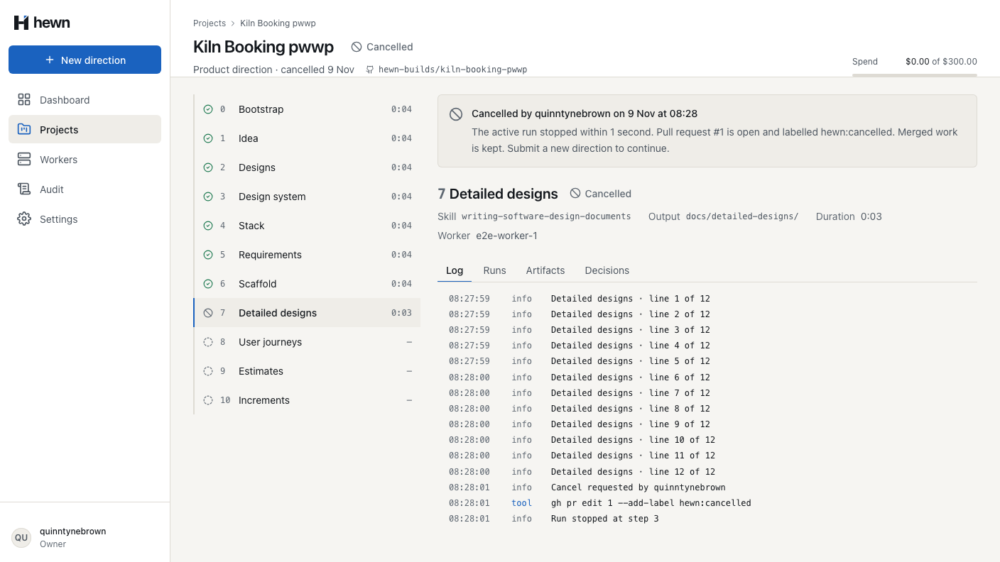
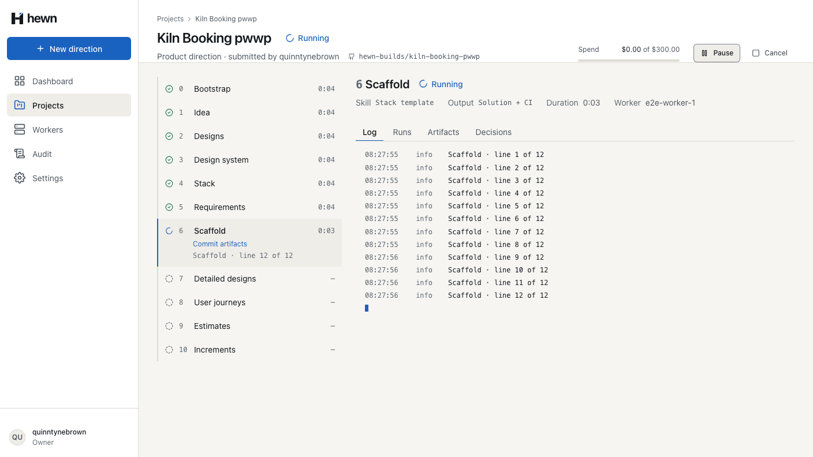
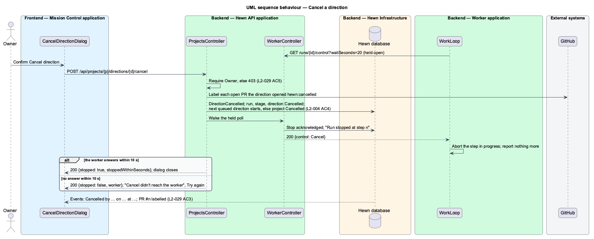
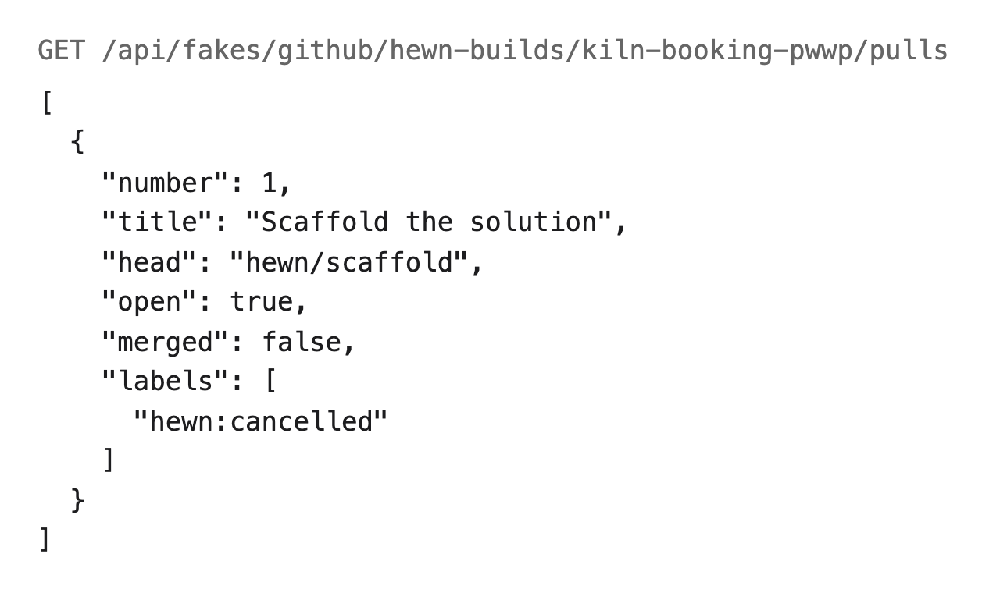
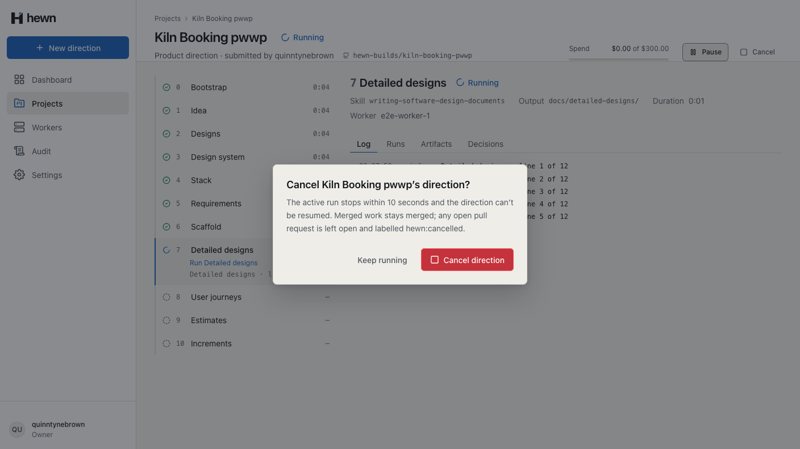
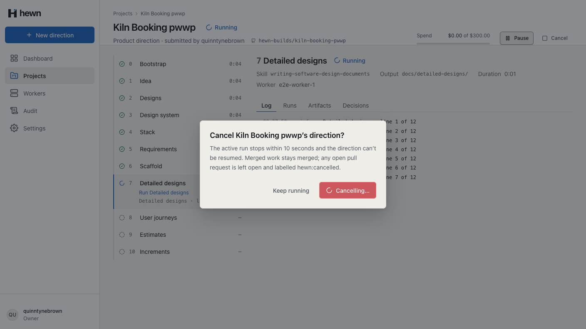
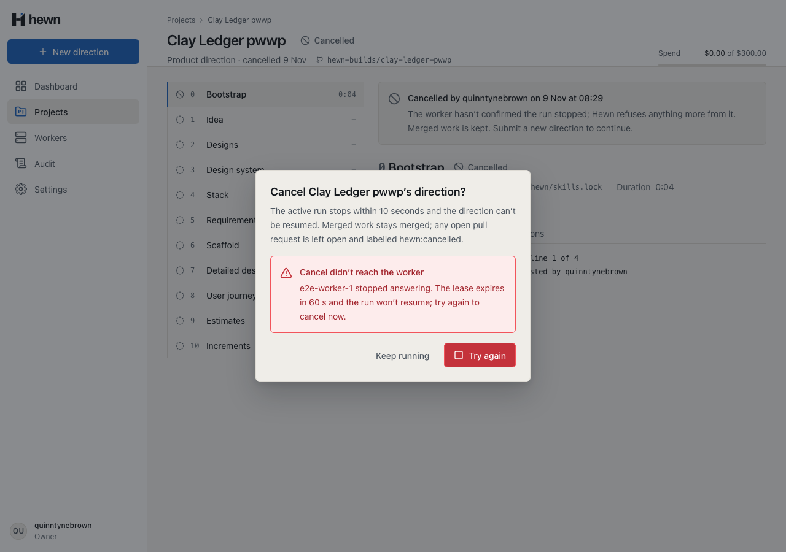
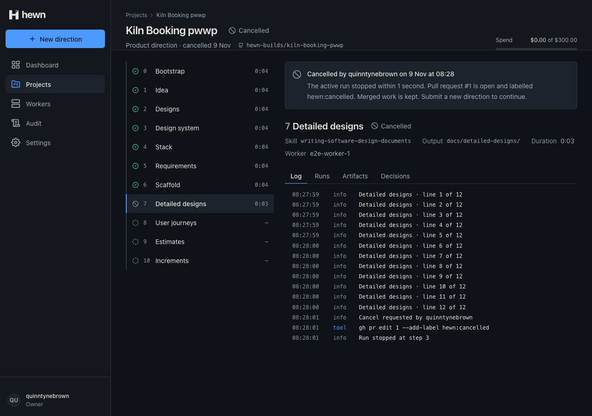
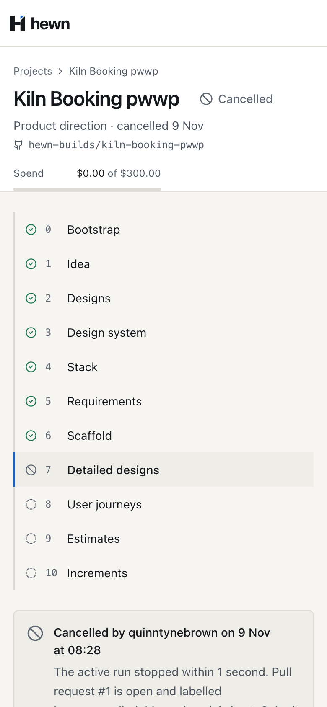
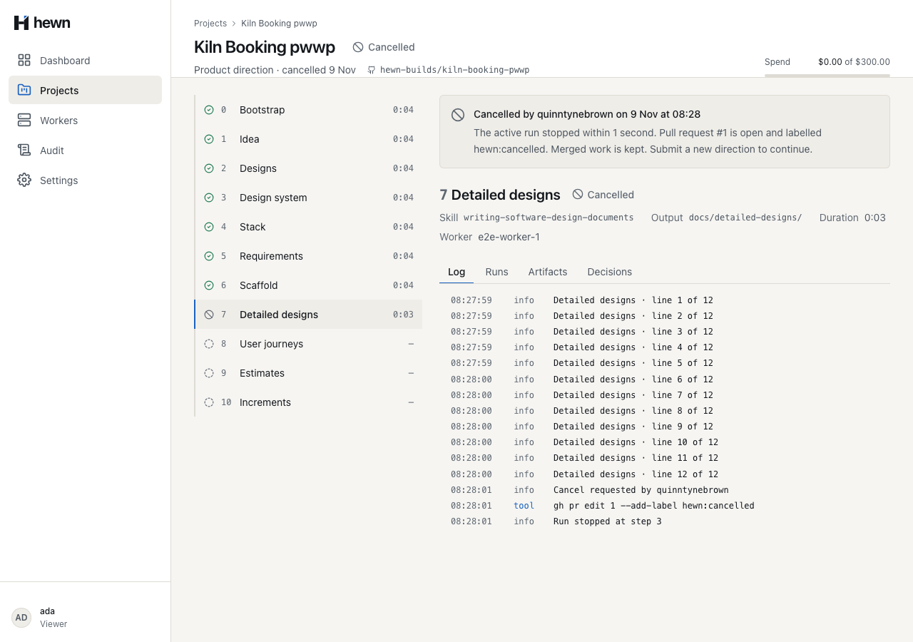

Stop unwanted work within ten seconds, and label what is still open.



public async Task<string?> Handle(PollRunControlQuery query, CancellationToken cancellationToken)
{
var status = await StatusAsync(query, cancellationToken);
if (status == RunStatus.Leased && query.WaitSeconds > 0)
{
var wait = TimeSpan.FromSeconds(Math.Min(query.WaitSeconds, MaxWaitSeconds));
if (!await signals.WaitForStopAsync(query.RunId, wait, cancellationToken))
{
return null;
}
status = await StatusAsync(query, cancellationToken);
}
if (status != RunStatus.Cancelled)
{
private async listenForControl(workerId: string, run: LeasedRun, lease: AbortController): Promise<void> {
while (!lease.signal.aborted) {
try {
const control = await this.api.control(workerId, run, this.controlWaitSeconds, lease.signal);
if (control === 'Cancel') {
this.log('Cancelled; the run stops now', { runId: run.runId });
lease.abort(new Error('Cancelled by an Owner.'));
return;
}
} catch (error) {
// A lost lease is the heartbeat's to handle; otherwise wait a little and poll again.
if (lease.signal.aborted || error instanceof LeaseLostError) return;
await sleep(1_000, lease.signal);
}
}
}
await RunLog.InfoAsync(db, events, run, $"Cancel requested by {user.Login}", clock.GetUtcNow(), cancellationToken);
await LabelOpenPullRequestsAsync(project, direction, run, cancellationToken);
}
await pipeline.OnCancelledAsync(run, project, direction, user.Login, cancellationToken);
}
await db.SaveChangesAsync(cancellationToken);
await events.PublishAsync(cancellationToken);
var stopped = true;
if (run is { HadWorkerWhenCancelled: true, StopAcknowledgedAt: null })
{
signals.RequestStop(run.Id);
stopped = await signals.WaitForAcknowledgementAsync(run.Id, TimeSpan.FromSeconds(options.Value.StopDeadlineSeconds), cancellationToken);
signals.Forget(run.Id);
run?.Cancel(now);
if (direction.Cancel(cancelledBy, now, run?.HadWorkerWhenCancelled ?? false) is { } stage)
{
await AppendStageAsync(direction, stage, cancellationToken);
}
await AppendDirectionAsync(direction, cancellationToken);
if (project.NextQueuedDirection(direction.Id) is { } queued)
{
await StartDirectionAsync(project, queued, cancellationToken);
return;
}
project.ChangeStatus(ProjectStatus.Cancelled);
await AppendProjectAsync(project, cancellationToken);
}
foreach (var number in numbers)
{
try
{
var pull = await gitHub.GetPullRequestAsync(project.RepositoryOwner!, project.RepositoryName!, number, cancellationToken);
if (pull is null || pull.Merged)
{
continue;
}
await gitHub.AddLabelAsync(project.RepositoryOwner!, project.RepositoryName!, number, CancelledLabel, cancellationToken);
labelled.Add(number);
lines.Add(new RunLogEntry("tool", $"gh pr edit {number} --add-label {CancelledLabel}"));
}
catch (GitHubException e)
{






var control = ControlAsync(s.Worker, run);
var clock = Stopwatch.StartNew();
var response = await CancelAsync(s.Owner, s.ProjectId, s.DirectionId);
clock.Stop();
// The worker hears at once, and the API answers once it has.
Assert.Equal(HttpStatusCode.OK, response.StatusCode);
var body = await HewnClient.ReadJsonAsync(response);
Assert.Equal("Cancelled", body.GetProperty("status").GetString());
Assert.True(body.GetProperty("stopped").GetBoolean());
Assert.InRange(body.GetProperty("stoppedWithinSeconds").GetInt32(), 1, 10);
Assert.True(clock.Elapsed < TimeSpan.FromSeconds(10));
var heard = await control;
Assert.Equal(HttpStatusCode.OK, heard.StatusCode);
Assert.Equal("Cancel", (await HewnClient.ReadJsonAsync(heard)).GetProperty("control").GetString());
api.cancel();
await vi.advanceTimersByTimeAsync(10);
expect(finished).toEqual(['s0.1']);
expect(api.calls.filter((c) => c.method === 'step').map((c) => c.step)).toEqual([1, 2]);
expect(api.calls.filter((c) => c.method === 'checkpoint').map((c) => c.step)).toEqual([1]);
expect(logs).toContain('Cancelled; the run stops now');
await vi.advanceTimersByTimeAsync(30_000);
expect(finished).toEqual(['s0.1']);
expect(api.count('result')).toBe(0);
expect(api.count('checkpoint')).toBe(1);
7 new, real API
5 and 7 new
Pipeline 17 · behaviour 15 · a11y 11 · visual 7
await project.cancelButton.click();
const pressed = Date.now();
await project.cancelConfirm.click();
await expect(project.cancelDialog).toHaveCount(0, { timeout: 10_000 });
expect(Date.now() - pressed, 'the run stopped within 10 seconds').toBeLessThan(10_000);
await expect(project.projectStatus).toHaveText('Cancelled');
await expect(project.cancelledCallout).toContainText(/Cancelled by quinntynebrown on \d{1,2} \w{3} at \d\d:\d\d/);
await expect(project.cancelledCallout).toContainText(/The active run stopped within \d{1,2} seconds?\./);
await expect(project.cancelledCallout).toContainText('Pull request #1 is open and labelled hewn:cancelled.');
await expect(project.headerMeta).toContainText(/Product direction · cancelled \d{1,2} \w{3}/);
